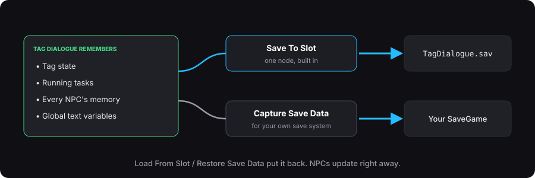

Save and load
Tag Dialogue remembers:
- the tag state
- running tasks
- every NPC's memory: task progress, closed options, Once Only lines and Pick positions
- global text variables
NPC memory lives in the subsystem, so NPCs in unloaded levels are saved too.

Option A: built-in slot. This is the simplest.
- Save To Slot (Slot Name, User Index) writes
Saved/SaveGames/<Slot>.sav. - Load From Slot reads it back. NPCs already in the level update right away.
Option B: your own save system.
- Capture Save Data returns one struct. Store it in your own Save Game, cloud save or database.
- Restore Save Data puts it back.
New game: Reset All Dialogue State. On State Restored fires after restore, load or reset.
Spawned NPCs: give each one a fixed Save Id on its TDS Dialogue component so its memory finds it again.